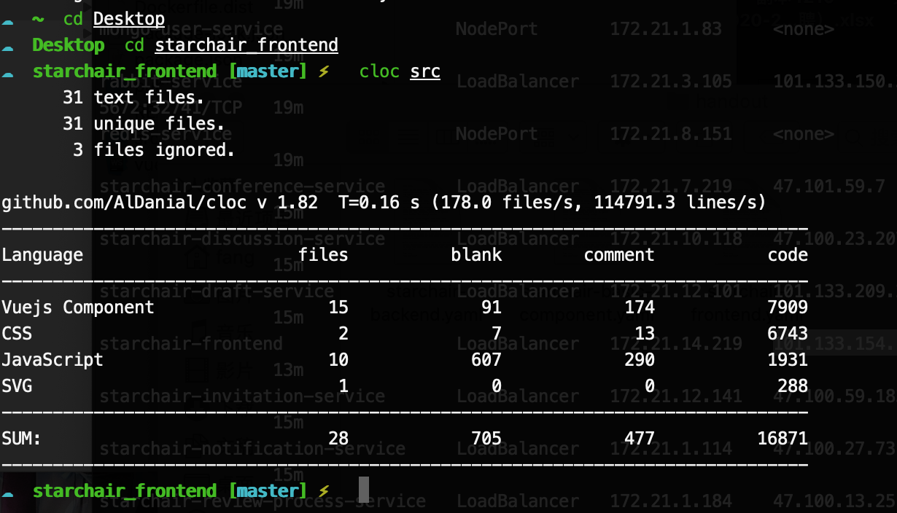
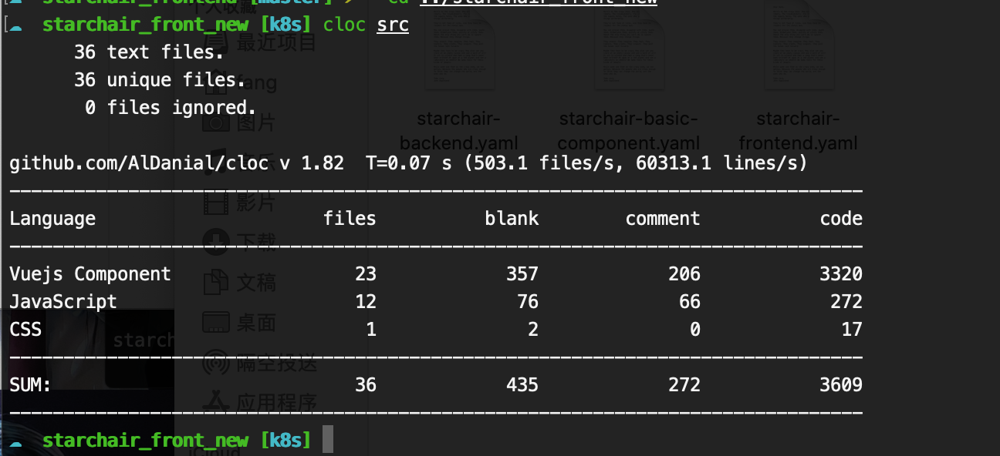

基本框架
1. 服务端
对于微服务架构，我们可以将服务端分为以下几块内容：
1.1 Http-Server
-
语言: Python
-
框架: Flask
总共拆分了7个服务, 具体参考 业务拆分思路
1.2 数据库
每个服务中都带有自己的数据库，在本次项目中，我们统一使用mongo作为数据库的服务端。
每个数据库的表都不同，且做了权限保护，不同服务不能直接访问对方服务的数据库。
1.3 注册中心
使用 consul 作为注册中心
在每个server中都单独设置里心跳检测的api用于注册中心的健康检查
同时使用consul提供的api进行服务注册和服务发现
1.4 消息队列与异步通信
采用RabbitMQ-python 作为消息队列与异步通信的框架，使用websocket提供了消息的通信
1.5 缓存池
考虑到微服务由多个服务构成，服务存在上下游的依赖关系，因此针对登录/认证这样的服务调用前提依赖，构建了缓存池对用户信息进行存储。
我们使用Redis作为用户登录缓存池
2. 客户端
Hint
我们相信更美观了，也更好用了
-
vue2 -> vue3 (使用vue3重构了项目)
-
Ant-Design 作为UI
-
使用websocket与消息队列服务进行相连，在前端实现消息的展示
-
更为合理的页面布局和跳转方式
想必看了代码量对比就知道为什么要重构了
原项目代码

重写后
